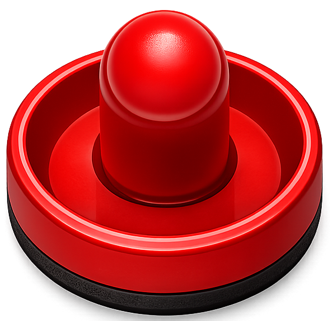

Saber MásTodo sobre los formatos de torneo y cómo funciona el Ranking FIFA
El "tejo hockey sobre mesa", o "air hockey" en otras regiones, es un juego de mesa en el que dos jugadores utilizan mazos para golpear un disco sobre una superficie con aire, simulando un hockey sobre hielo en miniatura. El objetivo es anotar 7 goles en la portería contraria.
Esta es la metodología de cálculo del Ranking FIFA Oficial de la comunidad de Air Hockey (Tejo) "La Resistencia". Esta versión (V2) introduce un sistema de Suma Cero y un Multiplicador Dinámico por Diferencia de Puntos (tipo ELO) diseñado para controlar la inflación de puntos, evitar que el líder se vuelva inalcanzable de manera artificial y mantener la competitividad del ranking al rojo vivo.
Se utiliza el resultado final del primer torneo oficial como el punto de partida (base histórica):
| Posición | Jugador | Puntos Base |
|---|---|---|
| 1° Lugar (Campeón) | Chama | 100.0 |
| 2° Lugar (Subcampeón) | Rafa | 80.0 |
| 3° Lugar (Tercer Puesto) | Tomy | 60.0 |
| 4° Lugar (Cuarto Puesto) | Marco | 50.0 |
| 5° Lugar (5° en Fase de Liga) | Facu | 40.0 |
| 6° Lugar (6° en Fase de Liga) | Santi | 30.0 |
| 7° Lugar (7° en Fase de Liga) | Hector | 20.0 |
Para evitar la inflación artificial donde se creaban más puntos de los que se perdían, el sistema se rige bajo el principio de Suma Cero:
La importancia del torneo determina la base de puntos que se disputan en el encuentro:
| Tipo de Partido | Puntos Base | Descripción |
|---|---|---|
| Partido Amistoso | 2.0 | Reducido drásticamente para evitar la acumulación excesiva en retos informales |
| Fase de Liga o Grupos | 20.0 | Partidos correspondientes a la fase regular de torneos oficiales |
| Repechajes (formato de 9) | 20.0 | Mini-ligas de segundos y terceros puestos: son partidos de fase regular |
| Partido Eliminatorio (formato de 9) | 30.0 | Define un lugar en playoffs a un solo partido, así que vale como decisivo |
| Fase Final / Playoffs | 30.0 | Partidos decisivos (Semifinal, Tercer Puesto y Final) |
Para reflejar con precisión el desafío de cada partido, se descartan los multiplicadores estáticos por rango y se introduce un Multiplicador Dinámico por Diferencia de Puntos.
Se calcula la diferencia absoluta de puntos reales al momento de jugar: Diferencia (D) = Puntos del Jugador Fuerte − Puntos del Jugador Débil. Luego se aplica el multiplicador correspondiente al ganador:
Multiplicador = máx(0.1, 1.0 − D / 200) — el multiplicador mínimo garantizado es x0.1.
Multiplicador = 1.0 + D / 100
Tras finalizar cada partido, el algoritmo realiza las siguientes operaciones:
💡 Ejemplo 1: Partido Amistoso (Base = 2.0 pts)
Rafa (80.0 pts - Favorito) vs Tomy (60.0 pts) | Diferencia (D) = 20.0
💡 Ejemplo 2: Partido de Fase de Liga (Base = 20.0 pts)
Marco (50.0 pts) vs Chama (100.0 pts - Favorito) | Diferencia (D) = 50.0